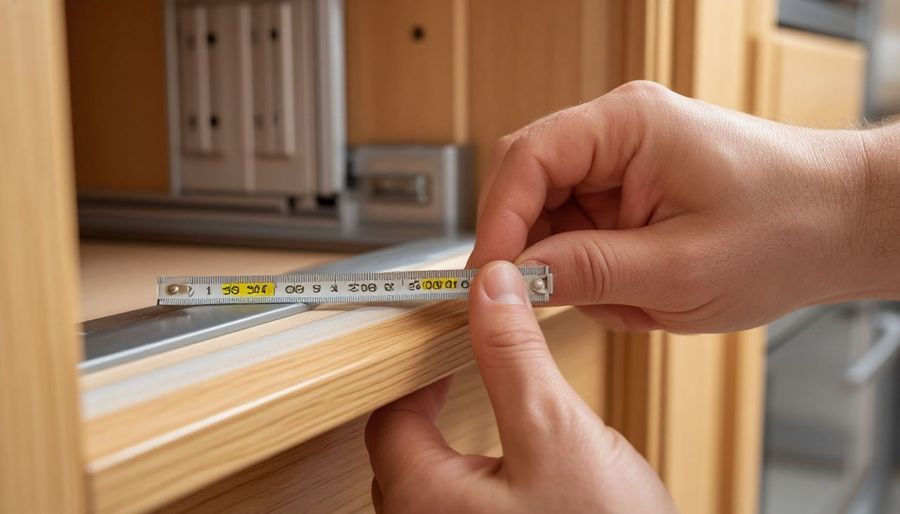
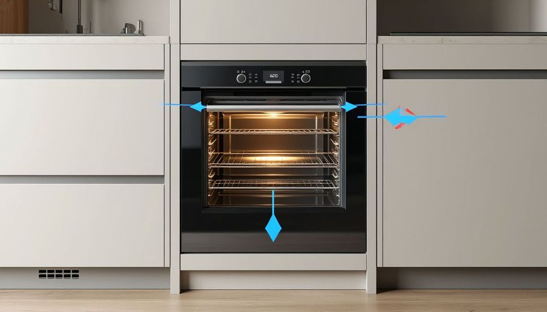
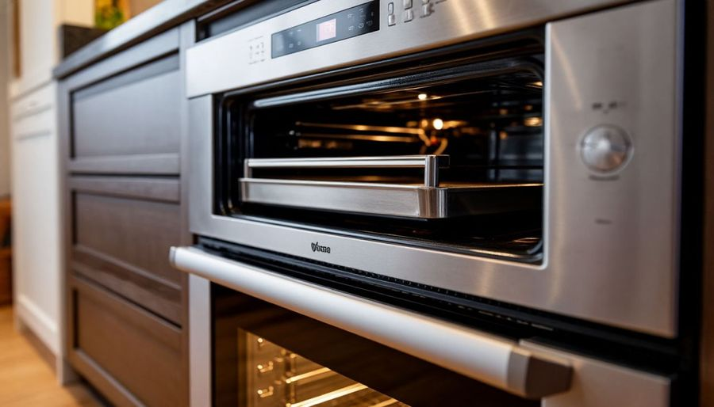

Коротко: чтобы пенал с духовкой и СВЧ работал нормально, нужны три вещи — ниша точно по паспорту техники (допуск ±2 мм), вентиляционные зазоры по инструкции конкретного производителя (25–50 мм сзади, отверстия снизу и сверху), розетка в соседней секции, а не за корпусом. Духовку ставят так, чтобы нижний край был на 60–80 см от пола, СВЧ — на 120–140 см. Проход перед колонной — минимум 90 см. Ниже — размеры по брендам, схема вентиляции, смета и ошибки, которые стоят 15 000–40 000 руб. переделок.
Кому подходит пенал, а кому лучше отказаться
Хороший вариант
Пенал выигрывает, если:
- кухня от 8 м², есть свободная стена под колонну;
- вы часто пользуетесь духовкой и не хотите наклоняться;
- нужно разгрузить столешницу — техника уходит в вертикаль;
- планируется блок из 2–3 колонн: техника + холодильник + хранение.
Когда пенал мешает
Откажитесь от колонны, если:
- проход между рядами меньше 90 см — открытая дверца духовки перекроет движение;
- кухня 5–6 м² с одним коротким фронтом — каждые 60 см базы на счету;
- электрика слабая, а техника мощная (духовка + СВЧ + кофемашина = до 6,5 кВт);
- в доме дети или пожилые люди — высокая духовка становится опасной.
Реальный случай: на кухне 6,5 м² поставили пенал 600 мм в начале ряда. Мойка оказалась в 1,2 м, холодильник — в 2,4 м. Рабочая столешница между ними — 45 см. Готовить неудобно, но переделывать уже поздно.
Размеры пенала под духовку и СВЧ

Типовые ниши по брендам
| Бренд | Духовка: Ш×В×Г ниши | СВЧ: Ш×В×Г ниши | Зазор сзади |
|---|---|---|---|
| Bosch | 560×595×550 мм | 560×380×550 мм | 50 мм |
| Siemens | 560×595×550 мм | 560×380×550 мм | 50 мм |
| Electrolux | 560×600×550 мм | 560×385×550 мм | 45 мм |
| Miele | 560×595×550 мм | 560×380×550 мм | 50 мм |
| Weissgauff | 560×590×550 мм | 560×380×550 мм | 40 мм |
Важно: размеры могут отличаться даже внутри одного бренда в зависимости от серии. Всегда скачивайте монтажную схему конкретной модели с сайта производителя.
На какой высоте ставить духовку
Комфортная схема для человека ростом 165–180 см:
- нижний край духовки — 60–80 см от чистого пола;
- центр дверцы — 95–120 см;
- СВЧ выше духовки — дно на уровне 120–140 см;
- верхний край СВЧ — не выше 160–170 см.
Если поднять выше — противни с горячим неудобно доставать. Если ниже — пропадает смысл пенала.

Вентиляция: почему техника перегревается
Встроенная духовка и СВЧ выделяют тепло. Если его не отводить, фасады нагреваются выше 60 °C, электроника уходит в ошибку, а кромка ПВХ деформируется. Вот как работает правильная вентиляция.

Схема движения воздуха
- Вход: цоколь 100–150 мм или решётка в нижней части пенала.
- Проход: зазор между техникой и задней стенкой — по паспорту модели (25–50 мм в зависимости от бренда).
- Выход: отверстие в верхней части пенала (50–100 см²) или через антресоль.
Требования по брендам
| Бренд | Зазор сзади | Задняя стенка пенала | Источник |
|---|---|---|---|
| Midea | ≥ 50 мм | Не рекомендуется | Паспорт модели |
| Samsung | ≈ 50 мм | С зазором | Installation Guide |
| NEFF | ≥ 35 мм | Запрещена | Монтажная инструкция |
| Bosch | ≥ 50 мм | С зазором | Installationsanleitung |
| AEG / Electrolux | ≥ 25 мм | Допускается | Паспорт модели |
Нормативная база: СП 60.13330.2020 (отопление, вентиляция, кондиционирование), ГОСТ 30971-2012 (монтажные швы), а также паспорт конкретной модели техники. Без паспорта статья — общие слова.
Что будет, если «запереть» духовку
- фасады нагреваются выше 60 °C — деформация плёнки и эмали;
- электроника духовки уходит в ошибку через 15–20 минут работы;
- срок службы техники сокращается на 30–40%;
- в худшем случае — оплавление кромки ПВХ и запах.
Совет: не закрывайте заднюю стенку пенала глухо, если производитель техники требует зазор. Верхнюю часть оставляйте с вентиляционным отверстием.
Где ставить колонну на кухне 6, 9 и 15 м²
Кухня 6 м²
- пенал 600 мм в начале или конце линейного гарнитура;
- проход перед колонной — не меньше 90 см;
- рядом с пеналом не ставить мойку — пар и брызги;
- рабочая столешница между мойкой и варочной — минимум 60 см.
Кухня 9 м²
- пенал + холодильник в одном блоке у стены;
- между колонной и варочной панелью — 40–60 см рабочей поверхности;
- если кухня П-образная — колонны в одном из торцов.
Кухня-гостиная 15 м²
- блок из 2–3 колонн на отдельной стене;
- одна колонна — духовка + СВЧ;
- вторая — холодильник;
- третья — хранение или кофемашина;
- столешница остаётся длинной и рабочей.
Соседство с холодильником и варочной панелью
- между пеналом и холодильником — боковой добор 20–50 мм, чтобы ручки не конфликтовали;
- вентиляция холодильника — по требованиям производителя;
- между пеналом и варочной панелью — минимум 30–40 см, лучше 60 см рабочей поверхности.
Электрика: розетки, линии, автоматы
Куда вывести розетку (не за техникой)
Нельзя: розетка прямо за духовкой или СВЧ. Вилка упирается в корпус, техника не встаёт в нишу.
Можно:
- в соседнюю секцию пенала (с доступом через дверцу);
- в техническую зону над или под прибором;
- за антресоль с доступом.
Мощность и кабель
| Прибор | Мощность | Кабель | Автомат |
|---|---|---|---|
| Духовой шкаф | 2,5–3,5 кВт | 3×2,5 мм² медь | 16 А |
| Встраиваемая СВЧ | 1,2–1,6 кВт | 3×1,5 мм² медь | 10 А |
| Кофемашина | 1,3–1,6 кВт | 3×1,5 мм² медь | 10 А |
Для духовки — отдельная линия от щита. Для СВЧ и кофемашины можно объединить, если суммарная мощность не превышает 3,5 кВт.
Сколько стоит пенал с техникой в 2026 году
Смета по позициям
| Позиция | Цена |
|---|---|
| Корпус пенала (ЛДСП 16 мм) | 18 000–30 000 руб. |
| Фасады (МДФ в плёнке/эмали) | 12 000–25 000 руб. |
| Фурнитура (петли, направляющие) | 6 000–15 000 руб. |
| Духовой шкаф (средний сегмент) | 30 000–80 000 руб. |
| Встраиваемая СВЧ | 25 000–70 000 руб. |
| Электрика (линии, розетки) | 8 000–20 000 руб. |
| Сборка и монтаж | 5 000–15 000 руб. |
| Итого | 104 000–255 000 руб. |
На чём нельзя экономить
- кромка ПВХ 1 мм на видимых торцах — 0,4 мм отклеится за год;
- петли с доводчиком — без них дверцы хлопают;
- направляющие полного выдвижения — иначе ящик не достать;
- термостойкая зона рядом с духовкой.
Частые ошибки (с реальными последствиями)
| Ошибка | Последствие | Стоимость исправления |
|---|---|---|
| Техника выбрана после заказа мебели | Ниша не подходит на 5–10 мм | 10 000–25 000 руб. |
| Духовка слишком высоко | Неудобно доставать противни | Переделка корпуса — 15 000 руб.+ |
| Розетка за корпусом | Мебель разбирают для подключения | 3 000–8 000 руб. |
| Нет запаса на открывание | Дверца упирается в ручку посудомойки | Замена фасада — 5 000–12 000 руб. |
| Пенал вплотную к варочной | Боковина перегревается, фасад деформируется | Замена боковины — 8 000–15 000 руб. |
Пошаговый чек-лист перед заказом кухни
- Измерьте кухню после черновых работ: стены, потолок, выступы, венткороб.
- Определите, что будет в колонне: только духовка, духовка + СВЧ, техника + ящики.
- Выберите конкретные модели техники и скачайте монтажные схемы.
- Решите высоту установки под ваш рост.
- Проверьте проходы: перед открытой духовкой — минимум 90 см.
- Разместите розетки не за техникой, а в соседней или технической зоне.
- Согласуйте с мебельщиками ниши, зазоры и вентиляцию.
- Проверьте открывание соседних фасадов и холодильника.
- После сборки проверьте нагрев фасадов при работе духовки 30 минут.
- Не включайте технику до окончательной проверки подключения.
Вопросы и ответы
Можно ли поставить пенал на кухне 5 м²?
Технически да, но он «съест» 600 мм базы. Лучше рассмотреть узкую колонну 450 мм или отказаться в пользу нижнего шкафа с духовкой.
На какой высоте розетка для духовки?
Не за прибором. В соседней секции — на уровне 60–80 см от пола, с доступом через дверцу.
Нужен ли вентилятор в пенале?
Для духовки и СВЧ обычно нет. Достаточно зазоров по паспорту (25–50 мм сзади) и отверстий снизу/сверху. Вентилятор нужен, если пенал закрыт со всех сторон и техника работает часами.
Можно ли ставить СВЧ над духовкой?
Да, если производитель допускает. Между ними — перемычка 10–20 мм. СВЧ на уровне 120–140 см.